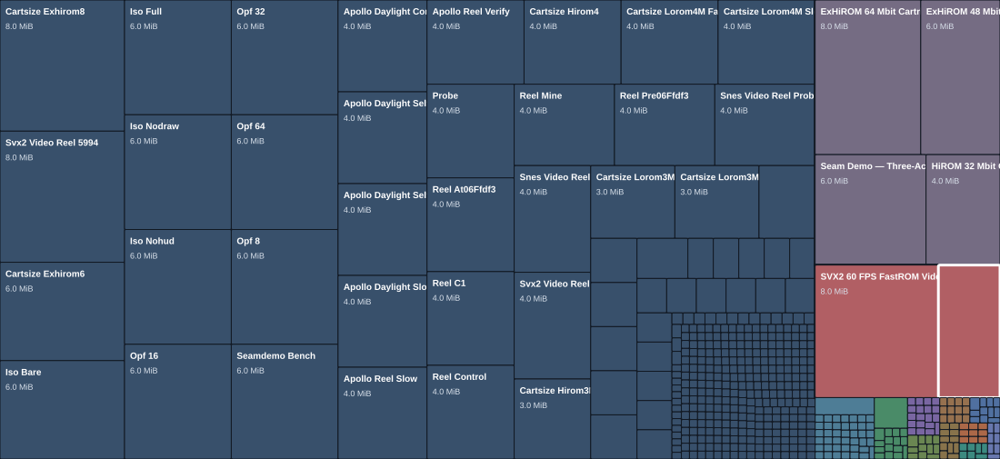

How to read it
Each tile is one ROM. The area is proportional to exact file size, so a 4 MiB ROM occupies 128 times the area of a 32 KiB ROM. Category clusters give the map a useful hierarchy; tile color repeats the category key.
UI concept 03 · storage map
A KDirStat-style treemap: each rectangle is one ROM, and its area represents the ROM’s exact byte size. Color and grouping show its category. Large files occupy more of the map; small builds remain individually present as tiny tiles.

Each tile is one ROM. The area is proportional to exact file size, so a 4 MiB ROM occupies 128 times the area of a 32 KiB ROM. Category clusters give the map a useful hierarchy; tile color repeats the category key.
Catalog-size behavior
At runtime, derive labels and navigation from the loaded catalog count. The rectangle area always represents the individual ROM’s byte size; the four counts below are checkpoints for the same screen.
Show one full-area tile. Hide the group selector and category legend.
Show ten readable, accurately sized tiles with inline names and sizes.
Cluster by category, label tiles that fit, and expose every title by focus, search, or the list view.
Keep all 1,000 tiles in the map; label only large rectangles. Category zoom, search, and a keyboard-accessible list provide exact navigation.